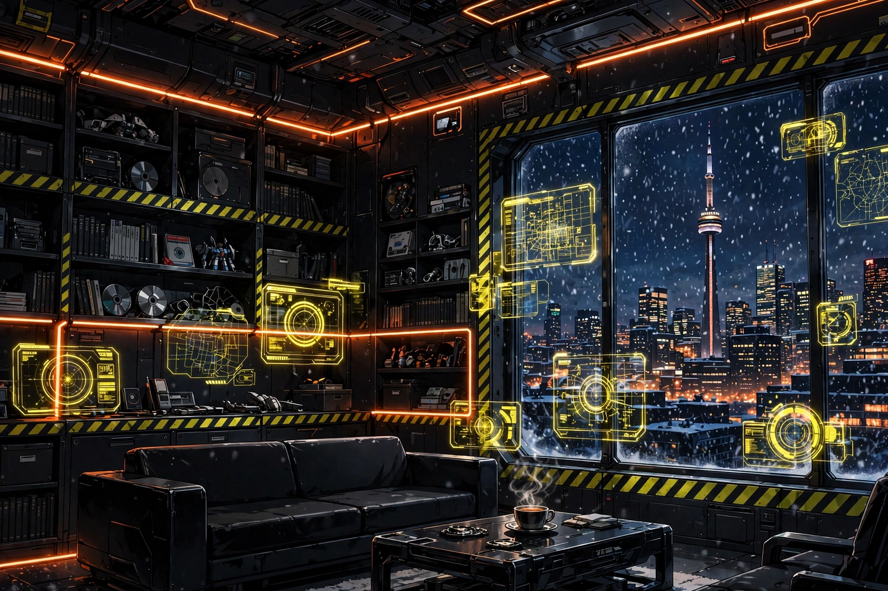

// 載入房間資料中…
WELCOME TO FREDDY'S DIGITAL HOME入嚟坐，
呢度係 Freddy 嘅屋企。
我係 Freddy，香港人，而家住喺加拿大。呢個網站唔係公司、唔係履歷表，只係一間屋 — 你可以喺客廳聽我講見證，去書房睇神學文章，或者去兒童房，陪小朋友一齊聽大衛嘅故事。
唔使趕，慢慢行。茶水自便，當自己屋企就得。
HOST // ADMIN屋主 · Freddy Cheung機構同工 · 「吾港。神學」版主 · 喺加拿大慢慢建立緊一個家
LOCAL_TIME --:-- — 無論你嗰邊幾點，入嚟都啱時候。
● LIVE LIVING_ROOM // CAM_01ORANGE / NEON YELLOW

// 01 — TRANSMISSION BOARD
玄關告示板 — 今日屋企有咩新嘢
好似屋企入門口塊板咁，回頭客一入嚟，就知最近有咩新鮮事。最新訊號已經上線。
INCOMING_SIGNALS3 ACTIVE
// 接收訊號中…
// 02 — SELECT MODULE
行下間屋 — 五道門，五個房間
成個網站就係一間屋：每個房間係一個獨立 module，日後加新內容，就係加多道門，唔使成間屋裝修過。撳一道門，睇下入面有咩。
— TITLE CARD // CORE_VERSE —
神能照著運行在我們心裡的大力，充充足足地成就一切，超過我們所求所想的。— EPHESIANS 以弗所書 3:20
呢句經文，係 Freddy 呢兩年等 PR 嘅路上，一次又一次返嚟睇嘅一句。掛喺牆上，唔係裝飾 — 係提醒：神開嘅路，往往大過我哋敢求嘅。
// 03 — SYSTEM EXPANSION
間屋點樣 擴建
呢個原型最想試嘅，其實係個結構：首頁只係門口同客廳，每個房間各自獨立。日後想加嘢，跟住呢三步就得，唔使推倒重來。
01
STEP_01有新諗法
例如想放講道錄音、開個讀書會專頁，或者為下一個兒童故事開新房 — 先諗清楚佢屬於邊類內容。
02
STEP_02開一間新房
每個 module 係一個獨立頁面，自己一套內容，唔會影響其他房間。正式版會放喺你 Cloudflare domain 上面，用 Cloudflare Pages 託管。
03
STEP_03喺首頁加道門
首頁只需要加多道門、喺玄關告示板貼張新字條，訪客就搵到。間屋，就係咁慢慢大落去。
// 04 — GUEST LOG
留言簿 — 走之前，留低一句
去親朋友屋企，臨走總會講句「下次再嚟」。呢本留言簿就係畀你留低足跡、打個招呼，或者留一句代禱需要都得。